LibraryAF¶
-
class
baca.LibraryAF.LibraryAF¶ Library A - F.
>>> from abjad import rhythmos as rhythmos
Special methods
-
(AbjadObject).__format__(format_specification='')¶ Formats Abjad object.
Set format_specification to ‘’ or ‘storage’. Interprets ‘’ equal to ‘storage’.
Returns string.
-
(AbjadObject).__repr__()¶ Gets interpreter representation of Abjad object.
Returns string.
Class & static methods
-
static
accent(*, selector='baca.phead(0)')¶ Attaches accent.
Attaches accent to pitched head 0:
>>> music_maker = baca.MusicMaker() >>> contribution = music_maker( ... 'Voice 1', ... [[0, 2, 10], [18, 16, 15, 20, 19], [9]], ... baca.accent(), ... baca.rests_around([2], [4]), ... baca.tuplet_bracket_staff_padding(5), ... counts=[1, 1, 5, -1], ... time_treatments=[-1], ... ) >>> lilypond_file = music_maker.show(contribution) >>> abjad.show(lilypond_file, strict=89)
Attaches accent to pitched heads in tuplet 1:
>>> music_maker = baca.MusicMaker() >>> contribution = music_maker( ... 'Voice 1', ... [[0, 2, 10], [18, 16, 15, 20, 19], [9]], ... baca.map( ... baca.accent(selector=baca.pheads()), ... baca.tuplet(1), ... ), ... baca.rests_around([2], [4]), ... baca.tuplet_bracket_staff_padding(5), ... counts=[1, 1, 5, -1], ... time_treatments=[-1], ... ) >>> lilypond_file = music_maker.show(contribution) >>> abjad.show(lilypond_file, strict=89)
Return type: IndicatorCommand
-
static
accidental_stencil_false(*, selector='baca.leaf(0)')¶ Overrides accidental stencil.
Return type: OverrideCommand
-
static
accidental_transparent(*, selector='baca.leaves()')¶ Overrides accidental transparency on.
-
static
accidental_x_extent_false(*, selector='baca.leaf(0)')¶ Overrides accidental x-extent.
Return type: OverrideCommand
-
static
allow_octaves(*, selector='baca.leaves()')¶ Attaches ALLOW_OCTAVE tag.
Return type: IndicatorCommand
-
static
alternate_bow_strokes(*, downbow_first=True, selector='baca.pheads()')¶ Attaches alternate bow strokes.
Parameters: downbow_first ( bool) – is true when first stroke is down-bow.Attaches alternate bow strokes to pitched heads (down-bow first):
>>> music_maker = baca.MusicMaker() >>> contribution = music_maker( ... 'Voice 1', ... [[0, 2, 10], [18, 16, 15, 20, 19], [9]], ... baca.alternate_bow_strokes(downbow_first=True), ... baca.rests_around([2], [4]), ... baca.tuplet_bracket_staff_padding(5), ... counts=[1, 1, 5, -1], ... time_treatments=[-1], ... ) >>> lilypond_file = music_maker.show(contribution) >>> abjad.show(lilypond_file, strict=89)
Attaches alternate bow strokes to pitched heads (up-bow first):
>>> music_maker = baca.MusicMaker() >>> contribution = music_maker( ... 'Voice 1', ... [[0, 2, 10], [18, 16, 15, 20, 19], [9]], ... baca.alternate_bow_strokes(downbow_first=False), ... baca.rests_around([2], [4]), ... baca.tuplet_bracket_staff_padding(6), ... counts=[1, 1, 5, -1], ... time_treatments=[-1], ... ) >>> lilypond_file = music_maker.show(contribution) >>> abjad.show(lilypond_file, strict=89)
Attaches alternate bow strokes to pitched heads in tuplet 1:
>>> music_maker = baca.MusicMaker() >>> contribution = music_maker( ... 'Voice 1', ... [[0, 2, 10], [18, 16, 15, 20, 19], [9]], ... baca.map( ... baca.alternate_bow_strokes(), ... baca.tuplet(1), ... ), ... baca.rests_around([2], [4]), ... baca.tuplet_bracket_staff_padding(6), ... counts=[1, 1, 5, -1], ... time_treatments=[-1], ... ) >>> lilypond_file = music_maker.show(contribution) >>> abjad.show(lilypond_file, strict=89)
Return type: IndicatorCommand
-
static
anchor(remote_voice_name, remote_selector=None, local_selector=None)¶ Anchors music in this figure (filtered by
local_selector) to start offset ofremote_voice_name(filtered byremote_selector).Parameters: Return type:
-
static
anchor_after(remote_voice_name, remote_selector=None, local_selector=None)¶ Anchors music in this figure (filtered by
local_selector) to stop offset ofremote_voice_name(filtered byremote_selector).Parameters: Return type:
-
static
anchor_to_figure(figure_name)¶ Anchors music in this figure to start of
figure_name.Parameters: figure_name ( str) – figure name.Return type: AnchorSpecifier
-
static
ancora_dynamic(dynamic, *, selector='baca.phead(0)')¶ Attaches ancora dynamic.
Attaches ancora dynamic to pitched head 0:
>>> music_maker = baca.MusicMaker() >>> contribution = music_maker( ... 'Voice 1', ... [[0, 2, 10], [18, 16, 15, 20, 19], [9]], ... baca.ancora_dynamic('ff'), ... baca.rests_around([2], [4]), ... baca.tuplet_bracket_staff_padding(5), ... counts=[1, 1, 5, -1], ... time_treatments=[-1], ... ) >>> lilypond_file = music_maker.show(contribution) >>> abjad.show(lilypond_file, strict=89)
Attaches ancora dynamic to pitched head 0 in tuplet 1:
>>> music_maker = baca.MusicMaker() >>> contribution = music_maker( ... 'Voice 1', ... [[0, 2, 10], [18, 16, 15, 20, 19], [9]], ... baca.ancora_dynamic( ... 'ff', ... selector=baca.tuplets()[1:2].phead(0), ... ), ... baca.rests_around([2], [4]), ... baca.tuplet_bracket_staff_padding(5), ... counts=[1, 1, 5, -1], ... time_treatments=[-1], ... ) >>> lilypond_file = music_maker.show(contribution) >>> abjad.show(lilypond_file, strict=89)
Return type: IndicatorCommand
-
static
arpeggio(*, selector='baca.chead(0)')¶ Attaches arpeggio.
Attaches arpeggio to chord head 0:
>>> music_maker = baca.MusicMaker() >>> contribution = music_maker( ... 'Voice 1', ... [{0, 2, 10}, [17], {15, 16, 30}, {7, 20}, [9]], ... baca.arpeggio(), ... counts=[5, -3], ... talea_denominator=32, ... ) >>> lilypond_file = music_maker.show(contribution) >>> abjad.show(lilypond_file, strict=89)
Attaches arpeggio to last two chord heads:
>>> music_maker = baca.MusicMaker() >>> contribution = music_maker( ... 'Voice 1', ... [{0, 2, 10}, [17], {15, 16, 30}, {7, 20}, [9]], ... baca.arpeggio(selector=baca.cheads()[-2:]), ... counts=[5, -3], ... talea_denominator=32, ... ) >>> lilypond_file = music_maker.show(contribution) >>> abjad.show(lilypond_file, strict=89)
Return type: IndicatorCommand
-
static
articulation(articulation, *, selector='baca.phead(0)')¶ Attaches
articulation.Return type: IndicatorCommand
-
static
articulations(articulations, *, selector='baca.pheads()')¶ Attaches
articulations.Return type: IndicatorCommand
-
static
bar_extent(pair, *, selector='baca.leaf(0)', after=False)¶ Overrides bar line bar extent.
>>> maker = baca.SegmentMaker( ... score_template=baca.SingleStaffScoreTemplate(), ... spacing=baca.minimum_duration((1, 12)), ... time_signatures=[(4, 8), (3, 8), (4, 8), (3, 8)], ... )
>>> maker( ... 'MusicVoice', ... baca.bar_extent((-4, 4), selector=baca.group_by_measure()[1]), ... baca.bar_extent((-4, 4), selector=baca.leaf(-1), after=True), ... baca.make_even_runs(), ... baca.pitches('E4 D5 F4 E5 G4 F5'), ... )
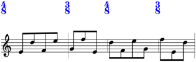>>> lilypond_file = maker.run(environment='docs') >>> abjad.show(lilypond_file, strict=89)
Return type: OverrideCommand
-
static
bar_extent_persistent(pair=None, *, selector='baca.leaf(0)')¶ Makes persistent bar-extent override.
>>> maker = baca.SegmentMaker( ... score_template=baca.SingleStaffScoreTemplate(), ... spacing=baca.minimum_duration((1, 12)), ... time_signatures=[(4, 8), (3, 8), (4, 8), (3, 8)], ... )
>>> maker( ... 'MusicVoice', ... baca.bar_extent_persistent((0, 0)), ... baca.make_even_runs(), ... baca.staff_lines(1), ... baca.staff_position(0), ... )
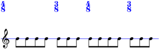>>> lilypond_file = maker.run(environment='docs') >>> abjad.show(lilypond_file, strict=89)
Return type: IndicatorCommand
-
static
bar_extent_zero(*, selector='baca.leaves()')¶ Makes bar-extent zero suite.
Return type: SuiteCommand
-
static
bar_line_transparent(*, selector='baca.leaves()')¶ Overrides bar line transparency.
Makes all bar lines transparent:
>>> maker = baca.SegmentMaker( ... score_template=baca.SingleStaffScoreTemplate(), ... time_signatures=[(4, 8), (3, 8), (4, 8), (3, 8)], ... )
>>> maker( ... 'MusicVoice', ... baca.pitches('E4 D5 F4 E5 G4 F5'), ... baca.RhythmCommand( ... rhythm_maker=rhythmos.TaleaRhythmMaker( ... talea=rhythmos.Talea( ... counts=[1, 1, 1, -1], ... denominator=8, ... ), ... ), ... ), ... baca.bar_line_transparent(), ... )
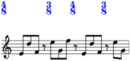>>> lilypond_file = maker.run(environment='docs') >>> abjad.show(lilypond_file, strict=89)
Makes bar line before measure 1 transparent:
>>> maker = baca.SegmentMaker( ... score_template=baca.SingleStaffScoreTemplate(), ... time_signatures=[(4, 8), (3, 8), (4, 8), (3, 8)], ... )
>>> maker( ... 'MusicVoice', ... baca.pitches('E4 D5 F4 E5 G4 F5'), ... baca.RhythmCommand( ... rhythm_maker=rhythmos.TaleaRhythmMaker( ... talea=rhythmos.Talea( ... counts=[1, 1, 1, -1], ... denominator=8, ... ), ... ), ... ), ... baca.bar_line_transparent(selector=baca.group_by_measure()[1]), ... )
>>> lilypond_file = maker.run(environment='docs') >>> abjad.show(lilypond_file, strict=89)
Return type: OverrideCommand
-
static
bass_to_octave(n, *, selector='baca.plts()')¶ Octave-transposes music.
Octave-transposes music such that the lowest note in the entire selection appears in octave 3:
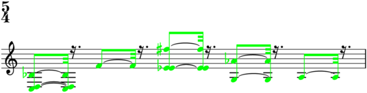>>> music_maker = baca.MusicMaker() >>> contribution = music_maker( ... 'Voice 1', ... [{0, 2, 10}, [17], {15, 16, 30}, {7, 20}, [9]], ... baca.bass_to_octave(3), ... baca.color(selector=baca.plts().group()), ... counts=[5, -3], ... talea_denominator=32, ... ) >>> lilypond_file = music_maker.show(contribution) >>> abjad.show(lilypond_file, strict=89)
Octave-transposes music such that the lowest pitch in each pitched logical tie appears in octave 3:
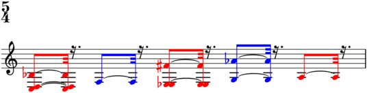>>> music_maker = baca.MusicMaker() >>> contribution = music_maker( ... 'Voice 1', ... [{0, 2, 10}, [17], {15, 16, 30}, {7, 20}, [9]], ... baca.map(baca.bass_to_octave(3), baca.plts()), ... baca.color(selector=baca.plts()), ... counts=[5, -3], ... talea_denominator=32, ... ) >>> lilypond_file = music_maker.show(contribution) >>> abjad.show(lilypond_file, strict=89)
Octave-transposes music such that the lowest pitch in each of the last two pitched logical ties appears in octave 3:
>>> music_maker = baca.MusicMaker() >>> contribution = music_maker( ... 'Voice 1', ... [{0, 2, 10}, [17], {15, 16, 30}, {7, 20}, [9]], ... baca.map(baca.bass_to_octave(3), baca.plts()[-2:]), ... baca.color(selector=baca.plts()[-2:]), ... counts=[5, -3], ... talea_denominator=32, ... ) >>> lilypond_file = music_maker.show(contribution) >>> abjad.show(lilypond_file, strict=89)
Return type: RegisterToOctaveCommand
-
static
bcps(bcps=None, *, selector='baca.leaves()')¶ Makes bow contact points.
Return type: BowContactPointCommand
-
static
beam_divisions(*, stemlets=None)¶ Beams divisions.
Beams divisions:
>>> music_maker = baca.MusicMaker() >>> contribution = music_maker( ... 'Voice 1', ... [[0, 2, 10], [18, 16, 15, 20, 19], [9]], ... baca.beam_divisions(), ... baca.rests_around([2], [2]), ... ) >>> lilypond_file = music_maker.show(contribution) >>> abjad.show(lilypond_file, strict=89)
Beams divisions with stemlets:
>>> music_maker = baca.MusicMaker() >>> contribution = music_maker( ... 'Voice 1', ... [[0, 2, 10], [18, 16, 15, 20, 19], [9]], ... baca.beam_divisions(stemlets=2), ... baca.rests_around([2], [2]), ... ) >>> lilypond_file = music_maker.show(contribution) >>> abjad.show(lilypond_file, strict=89)
Return type: BeamSpecifier
-
static
beam_everything(*, hide_nibs=False, stemlets=None)¶ Beams everything.
Beams everything:
>>> music_maker = baca.MusicMaker() >>> contribution = music_maker( ... 'Voice 1', ... [[0, 2, 10], [18, 16, 15, 20, 19], [9]], ... baca.beam_everything(), ... baca.rests_around([2], [2]), ... ) >>> lilypond_file = music_maker.show(contribution) >>> abjad.show(lilypond_file, strict=89)
Beams everything with stemlets:
>>> music_maker = baca.MusicMaker() >>> contribution = music_maker( ... 'Voice 1', ... [[0, 2, 10], [18, 16, 15, 20, 19], [9]], ... baca.beam_everything(stemlets=2), ... baca.rests_around([2], [2]), ... ) >>> lilypond_file = music_maker.show(contribution) >>> abjad.show(lilypond_file, strict=89)
Beams everything without nibs:
>>> music_maker = baca.MusicMaker() >>> contribution = music_maker( ... 'Voice 1', ... [[0, 2, 10], [18, 16, 15, 20, 19], [9]], ... baca.beam_everything(hide_nibs=True), ... baca.rests_around([2], [2]), ... ) >>> lilypond_file = music_maker.show(contribution) >>> abjad.show(lilypond_file, strict=89)
Return type: BeamSpecifier
-
static
beam_positions(n, *, selector='baca.leaves()')¶ Overrides beam positions.
Overrides beam positions on all leaves:
>>> music_maker = baca.MusicMaker() >>> contribution = music_maker( ... 'Voice 1', ... [[0, 2, 10], [18, 16, 15, 20, 19], [9]], ... baca.beam_positions(6), ... baca.rests_around([2], [4]), ... time_treatments=[-1], ... ) >>> lilypond_file = music_maker.show(contribution) >>> abjad.show(lilypond_file, strict=89)
Overrides beam positions on leaves in tuplet 1:
>>> music_maker = baca.MusicMaker() >>> contribution = music_maker( ... 'Voice 1', ... [[0, 2, 10], [18, 16, 15, 20, 19], [9]], ... baca.beam_positions(6, selector=baca.tuplet(1)), ... baca.rests_around([2], [4]), ... time_treatments=[-1], ... ) >>> lilypond_file = music_maker.show(contribution) >>> abjad.show(lilypond_file, strict=89)
Return type: OverrideCommand
-
static
beam_runs(*, hide_nibs=False)¶ Beams PLT runs.
Beams PLT runs:
>>> music_maker = baca.MusicMaker() >>> contribution = music_maker( ... 'Voice 1', ... [[0, 2, 10], [18, 16, 15, 20, 19], [9]], ... baca.beam_runs(), ... baca.rests_around([2], [2]), ... baca.tuplet_bracket_staff_padding(5), ... counts=[1, 1, 5, -1], ... time_treatments=[-1], ... ) >>> lilypond_file = music_maker.show(contribution) >>> abjad.show(lilypond_file, strict=89)
Beams PLT runs without nibs:
>>> music_maker = baca.MusicMaker() >>> contribution = music_maker( ... 'Voice 1', ... [[0, 2, 10], [18, 16, 15, 20, 19], [9]], ... baca.beam_runs(hide_nibs=True), ... baca.rests_around([2], [2]), ... baca.tuplet_bracket_staff_padding(5), ... counts=[1, 1, 5, -1], ... time_treatments=[-1], ... ) >>> lilypond_file = music_maker.show(contribution) >>> abjad.show(lilypond_file, strict=89)
Return type: BeamSpecifier
-
static
beam_stencil_false(*, selector='baca.leaves()')¶ Overrides beam stencil.
Return type: OverrideCommand
-
static
beam_transparent(*, selector='baca.leaves()')¶ Overrides beam transparency.
-
static
breaks(*page_specifiers, local_measure_numbers=None)¶ Makes breaks.
>>> breaks = baca.breaks( ... baca.page( ... [1, 20, [15, 20, 20]], ... [13, 140, [15, 20, 20]], ... ), ... baca.page( ... [23, 20, [15, 20, 20]], ... ), ... )
Raises exception on misnumbered pages:
>>> breaks = baca.breaks( ... baca.page( ... [1, 20, [15, 20, 20]], ... [13, 140, [15, 20, 20]], ... number=1, ... ), ... baca.page( ... [23, 20, [15, 20, 20]], ... number=9, ... ), ... ) Traceback (most recent call last): File "<stdin>", line 9, in <module> File "/Users/trevorbaca/baca/baca/LibraryAF.py", line 2503, in breaks raise Exception(message) Exception: page number (9) is not 2.
Raises exception on too few measures:
>>> maker = baca.SegmentMaker( ... score_template=baca.StringTrioScoreTemplate(), ... time_signatures=[(4, 8), (3, 8), (4, 8), (3, 8), (4, 8)], ... breaks=baca.breaks( ... baca.page([99, 0, (10, 20,)]), ... baca.page([109, 0, (10, 20,)]), ... ), ... )
>>> maker( ... 'ViolinMusicVoice', ... baca.make_even_runs(), ... baca.pitch('E4'), ... ) >>> lilypond_file = maker.run(environment='docs') Traceback (most recent call last): File "<stdin>", line 1, in <module> File "/Users/trevorbaca/baca/baca/SegmentMaker.py", line 6055, in run self._apply_breaks() File "/Users/trevorbaca/baca/baca/SegmentMaker.py", line 1006, in _apply_breaks self.breaks(self.score['GlobalSkips']) File "/Users/trevorbaca/baca/baca/BreakMeasureMap.py", line 375, in __call__ raise Exception(message) Exception: score ends at measure 103 (not 109).
Return type: BreakMeasureMap
-
static
breathe(*, selector='baca.leaf(0)')¶ Attaches LilyPond breathe command to before-slot.
Return type: IndicatorCommand
-
static
breathe_after_last()¶ Attaches LilyPond breathe command to before-slot of leaf-just-after-last.
Return type: IndicatorCommand
-
static
center_to_octave(n, *, selector='baca.plts()')¶ Octave-transposes music.
Octave-transposes music such that the centroid of all PLTs appears in octave 3:
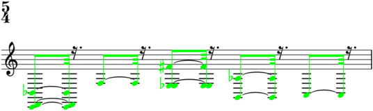>>> music_maker = baca.MusicMaker() >>> contribution = music_maker( ... 'Voice 1', ... [{0, 2, 10}, [17], {15, 16, 30}, {7, 20}, [9]], ... baca.center_to_octave(3), ... baca.color(selector=baca.plts().group()), ... counts=[5, -3], ... talea_denominator=32, ... ) >>> lilypond_file = music_maker.show(contribution) >>> abjad.show(lilypond_file, strict=89)
Octave-transposes music such that the centroid of each pitched logical tie appears in octave 3:
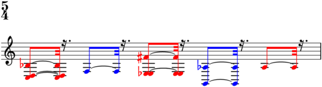>>> music_maker = baca.MusicMaker() >>> contribution = music_maker( ... 'Voice 1', ... [{0, 2, 10}, [17], {15, 16, 30}, {7, 20}, [9]], ... baca.map(baca.center_to_octave(3), baca.plts()), ... baca.color(selector=baca.plts()), ... counts=[5, -3], ... talea_denominator=32, ... ) >>> lilypond_file = music_maker.show(contribution) >>> abjad.show(lilypond_file, strict=89)
Octave-transposes music such that the centroid of each of the last two pitched logical ties appears in octave 3:
>>> music_maker = baca.MusicMaker() >>> contribution = music_maker( ... 'Voice 1', ... [{0, 2, 10}, [17], {15, 16, 30}, {7, 20}, [9]], ... baca.map(baca.center_to_octave(3), baca.plts()[-2:]), ... baca.color(selector=baca.plts()[-2:]), ... counts=[5, -3], ... talea_denominator=32, ... ) >>> lilypond_file = music_maker.show(contribution) >>> abjad.show(lilypond_file, strict=89)

Return type: RegisterToOctaveCommand
-
static
clef(clef='treble', *, selector='baca.leaf(0)', redundant=None)¶ Attaches clef.
Attaches clef to leaf 0:
>>> music_maker = baca.MusicMaker() >>> contribution = music_maker( ... 'Voice 1', ... [[0, 2, 10], [18, 16, 15, 20, 19], [9]], ... baca.clef('alto'), ... baca.rests_around([2], [4]), ... baca.tuplet_bracket_staff_padding(7), ... counts=[1, 1, 5, -1], ... time_treatments=[-1], ... ) >>> lilypond_file = music_maker.show(contribution) >>> abjad.show(lilypond_file, strict=89)
Attaches clef to leaf 0 in tuplet 1:
>>> music_maker = baca.MusicMaker() >>> contribution = music_maker( ... 'Voice 1', ... [[0, 2, 10], [18, 16, 15, 20, 19], [9]], ... baca.clef( ... clef='alto', ... selector=baca.tuplets()[1:2].leaf(0), ... ), ... baca.rests_around([2], [4]), ... baca.tuplet_bracket_staff_padding(7), ... counts=[1, 1, 5, -1], ... time_treatments=[-1], ... ) >>> lilypond_file = music_maker.show(contribution) >>> abjad.show(lilypond_file, strict=89)

Return type: IndicatorCommand
-
static
clef_extra_offset(pair, *, selector='baca.leaf(0)')¶ Overrides clef extra offset.
Return type: OverrideCommand
-
static
clef_x_extent_false(*, selector='baca.leaf(0)')¶ Overrides clef x-extent.
Return type: OverrideCommand
-
static
clusters(widths, *, selector='baca.plts()', start_pitch=None)¶ Makes clusters with
widthsandstart_pitch.Return type: ClusterCommand
-
static
coat(pitch)¶ Coats pitch.
Coats pitches:
>>> music_maker = baca.MusicMaker() >>> contribution = music_maker( ... 'Voice 1', ... 3 * [[0, 2, 10]], ... baca.imbricate( ... 'Voice 2', ... [baca.coat(0), baca.coat(2), 10, 0, 2], ... ), ... baca.rests_around([2], [4]), ... time_treatments=[-1], ... ) >>> lilypond_file = music_maker.show(contribution) >>> abjad.show(lilypond_file, strict=89)
Return type: Coat
-
static
color(*, selector='baca.leaves()')¶ Colors leaves.
Colors all leaves:
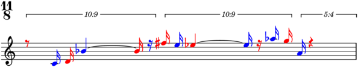>>> music_maker = baca.MusicMaker() >>> contribution = music_maker( ... 'Voice 1', ... [[0, 2, 10], [18, 16, 15, 20, 19], [9]], ... baca.color(), ... baca.flags(), ... baca.rests_around([2], [4]), ... baca.tuplet_bracket_staff_padding(5), ... counts=[1, 1, 5, -1], ... time_treatments=[-1], ... ) >>> lilypond_file = music_maker.show(contribution) >>> abjad.show(lilypond_file, strict=89)
Colors leaves in tuplet 1:
>>> music_maker = baca.MusicMaker() >>> contribution = music_maker( ... 'Voice 1', ... [[0, 2, 10], [18, 16, 15, 20, 19], [9]], ... baca.color(selector=baca.tuplets()[1:2].leaves()), ... baca.flags(), ... baca.rests_around([2], [4]), ... baca.tuplet_bracket_staff_padding(5), ... counts=[1, 1, 5, -1], ... time_treatments=[-1], ... ) >>> lilypond_file = music_maker.show(contribution) >>> abjad.show(lilypond_file, strict=89)
Return type: ColorCommand
-
static
color_fingerings(numbers, *, selector='baca.pheads()')¶ Adds color fingerings.
Return type: ColorFingeringCommand
-
static
compound_quarter_divisions()¶ Makes compound quarter divisions.
Return type: DivisionSequenceExpression
-
static
container(identifier=None, *, selector='baca.leaves()')¶ Makes container with
identifierand extends container withselectoroutput.>>> maker = baca.SegmentMaker( ... score_template=baca.SingleStaffScoreTemplate(), ... time_signatures=[(4, 8), (3, 8), (4, 8), (3, 8)], ... )
>>> maker( ... 'MusicVoice', ... baca.container('ViolinI', selector=baca.leaves()[:2]), ... baca.container('ViolinII', selector=baca.leaves()[2:]), ... baca.make_notes(repeat_ties=True), ... baca.pitches('E4 F4'), ... )
>>> lilypond_file = maker.run(environment='docs')
>>> abjad.f(lilypond_file[abjad.Score], strict=89) \context Score = "Score" << \context GlobalContext = "GlobalContext" << \context GlobalSkips = "GlobalSkips" { % [GlobalSkips measure 1] %! SM4 \time 4/8 %! SM8:EXPLICIT_TIME_SIGNATURE:SM1 \once \override Score.TimeSignature.color = #(x11-color 'blue) %! SM6:EXPLICIT_TIME_SIGNATURE_COLOR:SM1 s1 * 1/2 % [GlobalSkips measure 2] %! SM4 \time 3/8 %! SM8:EXPLICIT_TIME_SIGNATURE:SM1 \once \override Score.TimeSignature.color = #(x11-color 'blue) %! SM6:EXPLICIT_TIME_SIGNATURE_COLOR:SM1 s1 * 3/8 % [GlobalSkips measure 3] %! SM4 \time 4/8 %! SM8:EXPLICIT_TIME_SIGNATURE:SM1 \once \override Score.TimeSignature.color = #(x11-color 'blue) %! SM6:EXPLICIT_TIME_SIGNATURE_COLOR:SM1 s1 * 1/2 % [GlobalSkips measure 4] %! SM4 \time 3/8 %! SM8:EXPLICIT_TIME_SIGNATURE:SM1 \once \override Score.TimeSignature.color = #(x11-color 'blue) %! SM6:EXPLICIT_TIME_SIGNATURE_COLOR:SM1 s1 * 3/8 \override Score.BarLine.transparent = ##f %! SM5 \bar "|" %! SM5 } >> \context MusicContext = "MusicContext" << \context Staff = "MusicStaff" { \context Voice = "MusicVoice" { { %*% ViolinI % [MusicVoice measure 1] %! SM4 e'2 % [MusicVoice measure 2] %! SM4 f'4. } %*% ViolinI { %*% ViolinII % [MusicVoice measure 3] %! SM4 e'2 % [MusicVoice measure 4] %! SM4 f'4. } %*% ViolinII } } >> >>
Return type: ContainerCommand
-
static
cross_staff(*, selector='baca.phead(0)')¶ Attaches cross-staff command.
Attaches cross-staff command to pitched head 0:
>>> score_template = baca.StringTrioScoreTemplate() >>> accumulator = baca.MusicAccumulator(score_template) >>> accumulator( ... accumulator.music_maker( ... 'ViolinMusicVoice', ... [[9, 11, 12, 14, 16]], ... baca.flags(), ... baca.stem_up(), ... denominator=8, ... figure_name='vn.1', ... talea_denominator=8, ... ), ... ) >>> accumulator( ... accumulator.music_maker( ... 'ViolaMusicVoice', ... [[0, 2, 4, 5, 7]], ... baca.anchor('ViolinMusicVoice'), ... baca.cross_staff(), ... baca.flags(), ... baca.stem_up(), ... figure_name='va.1', ... talea_denominator=8, ... ), ... ) >>> accumulator( ... accumulator.music_maker( ... 'ViolinMusicVoice', ... [[15]], ... baca.flags(), ... figure_name='vn.2', ... talea_denominator=8, ... ), ... )
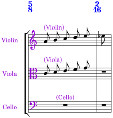>>> maker = baca.SegmentMaker( ... ignore_repeat_pitch_classes=True, ... ignore_unregistered_pitches=True, ... score_template=accumulator.score_template, ... spacing=baca.minimum_duration((1, 12)), ... time_signatures=accumulator.time_signatures, ... ) >>> accumulator.populate_segment_maker(maker) >>> lilypond_file = maker.run(environment='docs') >>> abjad.show(lilypond_file, strict=89)
Attaches cross-staff command to last two pitched leaves:
>>> score_template = baca.StringTrioScoreTemplate() >>> accumulator = baca.MusicAccumulator(score_template) >>> accumulator( ... accumulator.music_maker( ... 'ViolinMusicVoice', ... [[9, 11, 12, 14, 16]], ... baca.flags(), ... baca.stem_up(), ... denominator=8, ... figure_name='vn.1', ... talea_denominator=8, ... ), ... ) >>> accumulator( ... accumulator.music_maker( ... 'ViolaMusicVoice', ... [[0, 2, 4, 5, 7]], ... baca.anchor('ViolinMusicVoice'), ... baca.cross_staff(selector=baca.pleaves()[-2:]), ... baca.flags(), ... baca.stem_up(), ... figure_name='va.1', ... talea_denominator=8, ... ), ... ) >>> accumulator( ... accumulator.music_maker( ... 'ViolinMusicVoice', ... [[15]], ... baca.flags(), ... figure_name='vn.2', ... talea_denominator=8, ... ), ... )
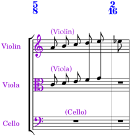>>> maker = baca.SegmentMaker( ... ignore_repeat_pitch_classes=True, ... ignore_unregistered_pitches=True, ... score_template=accumulator.score_template, ... spacing=baca.minimum_duration((1, 12)), ... time_signatures=accumulator.time_signatures, ... ) >>> accumulator.populate_segment_maker(maker) >>> lilypond_file = maker.run(environment='docs') >>> abjad.show(lilypond_file, strict=89)
Return type: IndicatorCommand
-
static
dashed_arrow()¶ Makes dashed arrow line segment.
Return type: ArrowLineSegment
-
static
dashed_hook()¶ Makes dashed hook line segment.
Return type: LineSegment
-
static
deviation(deviations, *, selector='baca.plts()')¶ Sets microtone
deviations.Return type: MicrotoneDeviationCommand
-
static
diatonic_clusters(widths, *, selector='baca.plts()')¶ Makes diatonic clusters with
widths.Return type: DiatonicClusterCommand
-
static
displacement(displacements, *, selector='baca.plts()')¶ Octave-displaces
selectoroutput.Octave-displaces PLTs:
>>> music_maker = baca.MusicMaker() >>> contribution = music_maker( ... 'Voice 1', ... 3 * [[0, 2, 3]], ... baca.displacement([0, 0, -1, -1, 1, 1]), ... baca.rests_around([2], [4]), ... baca.tuplet_bracket_staff_padding(5), ... counts=[1, 1, 5, -1], ... time_treatments=[-1], ... ) >>> lilypond_file = music_maker.show(contribution) >>> abjad.show(lilypond_file, strict=89)
Octave-displaces chords:
>>> music_maker = baca.MusicMaker() >>> contribution = music_maker( ... 'Voice 1', ... 6 * [{0, 2, 3}], ... baca.displacement([0, 0, -1, -1, 1, 1]), ... baca.rests_around([2], [4]), ... counts=[4], ... ) >>> lilypond_file = music_maker.show(contribution) >>> abjad.show(lilypond_file, strict=89)
Octave-displaces last six pitched logical ties:
>>> music_maker = baca.MusicMaker() >>> contribution = music_maker( ... 'Voice 1', ... 3 * [[0, 2, 3]], ... baca.displacement( ... [0, 0, -1, -1, 1, 1], ... selector=baca.plts()[-6:], ... ), ... baca.rests_around([2], [4]), ... baca.tuplet_bracket_staff_padding(5), ... counts=[1, 1, 5, -1], ... time_treatments=[-1], ... ) >>> lilypond_file = music_maker.show(contribution) >>> abjad.show(lilypond_file, strict=89)
Return type: OctaveDisplacementCommand
-
static
dls_padding(n, *, selector='baca.leaves()')¶ Overrides dynamic line spanner padding.
Return type: OverrideCommand
-
static
dls_staff_padding(n, *, selector='baca.leaves()')¶ Overrides dynamic line spanner staff padding
Overrides dynamic line spanner staff padding on all leaves:
>>> music_maker = baca.MusicMaker() >>> contribution = music_maker( ... 'Voice 1', ... [[0, 2, 10], [18, 16, 15, 20, 19], [9]], ... baca.dls_staff_padding(4), ... baca.map(baca.hairpin('p < f'), baca.tuplets()), ... baca.rests_around([2], [4]), ... baca.tuplet_bracket_staff_padding(5), ... counts=[1, 1, 5, -1], ... time_treatments=[-1], ... ) >>> lilypond_file = music_maker.show(contribution) >>> abjad.show(lilypond_file, strict=89)
Overrides dynamic line spanner staff padding on leaves in tuplet 1:
>>> music_maker = baca.MusicMaker() >>> contribution = music_maker( ... 'Voice 1', ... [[0, 2, 10], [18, 16, 15, 20, 19], [9]], ... baca.dls_staff_padding(4, selector=baca.tuplet(1)), ... baca.map(baca.hairpin('p < f'), baca.tuplets()), ... baca.rests_around([2], [4]), ... baca.tuplet_bracket_staff_padding(5), ... counts=[1, 1, 5, -1], ... time_treatments=[-1], ... ) >>> lilypond_file = music_maker.show(contribution) >>> abjad.show(lilypond_file, strict=89)
Return type: OverrideCommand
-
static
dls_up(*, selector='baca.leaves()')¶ Overrides dynamic line spanner direction.
Up-overrides dynamic line spanner direction on all leaves:
>>> music_maker = baca.MusicMaker() >>> contribution = music_maker( ... 'Voice 1', ... [[0, 2, 10], [18, 16, 15, 20, 19], [9]], ... baca.dls_up(), ... baca.map(baca.hairpin('p < f'), baca.tuplets()), ... baca.rests_around([2], [4]), ... baca.tuplet_bracket_staff_padding(5), ... counts=[1, 1, 5, -1], ... time_treatments=[-1], ... ) >>> lilypond_file = music_maker.show(contribution) >>> abjad.show(lilypond_file, strict=89)
Up-overrides dynamic line spanner direction on leaves in tuplet 1:
>>> music_maker = baca.MusicMaker() >>> contribution = music_maker( ... 'Voice 1', ... [[0, 2, 10], [18, 16, 15, 20, 19], [9]], ... baca.dls_up(selector=baca.tuplet(1)), ... baca.map(baca.hairpin('p < f'), baca.tuplets()), ... baca.rests_around([2], [4]), ... baca.tuplet_bracket_staff_padding(5), ... counts=[1, 1, 5, -1], ... time_treatments=[-1], ... ) >>> lilypond_file = music_maker.show(contribution) >>> abjad.show(lilypond_file, strict=89)
Return type: OverrideCommand
-
static
dots_stencil_false(*, selector='baca.leaves()')¶ Overrides dots stencil.
Return type: OverrideCommand
-
static
dots_transparent(*, selector='baca.leaves()')¶ Overrides dots transparency.
-
static
double_staccato(*, selector='baca.phead(0)')¶ Attaches double-staccato.
Attaches double-staccato to pitched head 0:
>>> music_maker = baca.MusicMaker() >>> contribution = music_maker( ... 'Voice 1', ... [[0, 2, 10], [18, 16, 15, 20, 19], [9]], ... baca.double_staccato(), ... baca.rests_around([2], [4]), ... baca.tuplet_bracket_staff_padding(5), ... counts=[1, 1, 5, -1], ... time_treatments=[-1], ... ) >>> lilypond_file = music_maker.show(contribution) >>> abjad.show(lilypond_file, strict=89)
Attaches double-staccato to pitched heads in tuplet 1:
>>> music_maker = baca.MusicMaker() >>> contribution = music_maker( ... 'Voice 1', ... [[0, 2, 10], [18, 16, 15, 20, 19], [9]], ... baca.map( ... baca.double_staccato(selector=baca.pheads()), ... baca.tuplet(1), ... ), ... baca.rests_around([2], [4]), ... baca.tuplet_bracket_staff_padding(5), ... counts=[1, 1, 5, -1], ... time_treatments=[-1], ... ) >>> lilypond_file = music_maker.show(contribution) >>> abjad.show(lilypond_file, strict=89)
Return type: IndicatorCommand
-
static
down_arpeggio(*, selector='baca.chead(0)')¶ Attaches down-arpeggio.
Attaches down-arpeggio to chord head 0:
>>> music_maker = baca.MusicMaker() >>> contribution = music_maker( ... 'Voice 1', ... [{0, 2, 10}, [17], {15, 16, 30}, {7, 20}, [9]], ... baca.down_arpeggio(), ... counts=[5, -3], ... talea_denominator=32, ... ) >>> lilypond_file = music_maker.show(contribution) >>> abjad.show(lilypond_file, strict=89)
Attaches down-arpeggio to last two chord heads:
>>> music_maker = baca.MusicMaker() >>> contribution = music_maker( ... 'Voice 1', ... [{0, 2, 10}, [17], {15, 16, 30}, {7, 20}, [9]], ... baca.down_arpeggio(selector=baca.cheads()[-2:]), ... counts=[5, -3], ... talea_denominator=32, ... ) >>> lilypond_file = music_maker.show(contribution) >>> abjad.show(lilypond_file, strict=89)
Return type: IndicatorCommand
-
static
down_bow(*, selector='baca.phead(0)')¶ Attaches down-bow.
Attaches down-bow to pitched head 0:
>>> music_maker = baca.MusicMaker() >>> contribution = music_maker( ... 'Voice 1', ... [[0, 2, 10], [18, 16, 15, 20, 19], [9]], ... baca.down_bow(), ... baca.rests_around([2], [4]), ... baca.tuplet_bracket_staff_padding(5), ... counts=[1, 1, 5, -1], ... time_treatments=[-1], ... ) >>> lilypond_file = music_maker.show(contribution) >>> abjad.show(lilypond_file, strict=89)
Attaches down-bow to pitched heads in tuplet 1:
>>> music_maker = baca.MusicMaker() >>> contribution = music_maker( ... 'Voice 1', ... [[0, 2, 10], [18, 16, 15, 20, 19], [9]], ... baca.map( ... baca.down_bow(selector=baca.pheads()), ... baca.tuplet(1), ... ), ... baca.rests_around([2], [4]), ... baca.tuplet_bracket_staff_padding(5), ... counts=[1, 1, 5, -1], ... time_treatments=[-1], ... ) >>> lilypond_file = music_maker.show(contribution) >>> abjad.show(lilypond_file, strict=89)
Return type: IndicatorCommand
-
static
dynamic(dynamic, *, selector='baca.phead(0)', redundant=None)¶ Attaches dynamic.
Attaches dynamic to pitched head 0:
>>> music_maker = baca.MusicMaker() >>> contribution = music_maker( ... 'Voice 1', ... [[0, 2, 10], [18, 16, 15, 20, 19], [9]], ... baca.dynamic('f'), ... baca.rests_around([2], [4]), ... baca.tuplet_bracket_staff_padding(5), ... counts=[1, 1, 5, -1], ... time_treatments=[-1], ... ) >>> lilypond_file = music_maker.show(contribution) >>> abjad.show(lilypond_file, strict=89)
Attaches dynamic to pitched head 0 in tuplet 1:
>>> music_maker = baca.MusicMaker() >>> contribution = music_maker( ... 'Voice 1', ... [[0, 2, 10], [18, 16, 15, 20, 19], [9]], ... baca.dynamic('f', selector=baca.tuplets()[1:2].phead(0)), ... baca.rests_around([2], [4]), ... baca.tuplet_bracket_staff_padding(5), ... counts=[1, 1, 5, -1], ... time_treatments=[-1], ... ) >>> lilypond_file = music_maker.show(contribution) >>> abjad.show(lilypond_file, strict=89)
Attaches effort dynamic to pitched head 0:
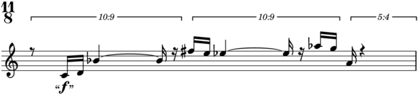>>> music_maker = baca.MusicMaker() >>> contribution = music_maker( ... 'Voice 1', ... [[0, 2, 10], [18, 16, 15, 20, 19], [9]], ... baca.dynamic('"f"'), ... baca.rests_around([2], [4]), ... baca.tuplet_bracket_staff_padding(5), ... counts=[1, 1, 5, -1], ... time_treatments=[-1], ... ) >>> lilypond_file = music_maker.show(contribution) >>> abjad.show(lilypond_file, strict=89)
Return type: IndicatorCommand
-
static
dynamic_down(*, selector='baca.leaf(0)')¶ Attaches dynamic-down command.
Attaches dynamic-down command to leaf 0:
>>> music_maker = baca.MusicMaker() >>> contribution = music_maker( ... 'Voice 1', ... [[0, 2, 10], [18, 16, 15, 20, 19], [9]], ... baca.dynamic('p'), ... baca.dynamic('f', selector=baca.tuplets()[1:2].phead(0)), ... baca.dynamic_down(), ... baca.rests_around([2], [4]), ... baca.tuplet_bracket_staff_padding(5), ... counts=[1, 1, 5, -1], ... time_treatments=[-1], ... ) >>> lilypond_file = music_maker.show(contribution) >>> abjad.show(lilypond_file, strict=89)
Attaches dynamic-down command to leaf 0 in tuplet 1:
>>> music_maker = baca.MusicMaker() >>> contribution = music_maker( ... 'Voice 1', ... [[0, 2, 10], [18, 16, 15, 20, 19], [9]], ... baca.dynamic('p'), ... baca.dynamic('f', selector=baca.tuplets()[1:2].phead(0)), ... baca.dynamic_down(selector=baca.tuplets()[1:2].leaf(0)), ... baca.rests_around([2], [4]), ... baca.tuplet_bracket_staff_padding(5), ... counts=[1, 1, 5, -1], ... time_treatments=[-1], ... ) >>> lilypond_file = music_maker.show(contribution) >>> abjad.show(lilypond_file, strict=89)
Return type: IndicatorCommand
-
static
dynamic_text_extra_offset(pair, *, selector='baca.pleaf(0)')¶ Overrides dynamic text extra offset.
Overrides dynamic text extra offset on pitched leaf 0:
>>> music_maker = baca.MusicMaker() >>> contribution = music_maker( ... 'Voice 1', ... [[0, 2, 10], [18, 16, 15, 20, 19], [9]], ... baca.dynamic('p'), ... baca.dynamic('f', selector=baca.tuplets()[1:2].pleaf(0)), ... baca.dynamic_text_extra_offset((-3, 0)), ... baca.rests_around([2], [4]), ... baca.tuplet_bracket_staff_padding(5), ... counts=[1, 1, 5, -1], ... time_treatments=[-1], ... ) >>> lilypond_file = music_maker.show(contribution) >>> abjad.show(lilypond_file, strict=89)
Overrides dynamic text extra offset on leaf 0 in tuplet 1:
>>> music_maker = baca.MusicMaker() >>> contribution = music_maker( ... 'Voice 1', ... [[0, 2, 10], [18, 16, 15, 20, 19], [9]], ... baca.dynamic('p'), ... baca.dynamic('f', selector=baca.tuplets()[1:2].leaf(0)), ... baca.dynamic_text_extra_offset( ... (-3, 0), ... selector=baca.tuplets()[1:2].leaf(0), ... ), ... baca.rests_around([2], [4]), ... baca.tuplet_bracket_staff_padding(5), ... counts=[1, 1, 5, -1], ... time_treatments=[-1], ... ) >>> lilypond_file = music_maker.show(contribution) >>> abjad.show(lilypond_file, strict=89)
Raise exception on nonpair input:
>>> baca.dynamic_text_extra_offset(2) Traceback (most recent call last): File "<stdin>", line 1, in <module> File "/Users/trevorbaca/baca/baca/LibraryAF.py", line 5705, in dynamic_text_extra_offset f'dynamic text extra offset must be pair (not {pair}).' Exception: dynamic text extra offset must be pair (not 2).
Return type: OverrideCommand
-
static
dynamic_text_left(*, selector='baca.pleaf(0)')¶ Overrides dynamic text self-alignment-X and dynamic text X-extent.
Return type: SuiteCommand
-
static
dynamic_text_stencil_false(*, selector='baca.pleaf(0)')¶ Overrides dynamic text stencil.
Return type: OverrideCommand
-
static
dynamic_text_transparent(*, selector='baca.pleaf(0)')¶ Overrides dynamic text transparency.
Return type: OverrideCommand
-
static
dynamic_text_x_extent_zero(*, selector='baca.pleaf(0)')¶ Overrides dynamic text X-extent.
Return type: OverrideCommand
-
static
dynamic_text_x_offset(n, *, selector='baca.pleaf(0)')¶ Overrides dynamic text X-extent.
Return type: OverrideCommand
-
static
dynamic_text_y_offset(n, *, selector='baca.pleaf(0)')¶ Overrides dynamic text Y-extent.
Return type: OverrideCommand
-
static
dynamic_up(*, selector='baca.leaf(0)')¶ Attaches dynamic-up command.
Attaches dynamic-up command to leaf 0:
>>> music_maker = baca.MusicMaker() >>> contribution = music_maker( ... 'Voice 1', ... [[0, 2, 10], [18, 16, 15, 20, 19], [9]], ... baca.dynamic('p'), ... baca.dynamic('f', selector=baca.tuplets()[1:2].phead(0)), ... baca.dynamic_up(), ... baca.rests_around([2], [4]), ... baca.tuplet_bracket_staff_padding(5), ... counts=[1, 1, 5, -1], ... time_treatments=[-1], ... ) >>> lilypond_file = music_maker.show(contribution) >>> abjad.show(lilypond_file, strict=89)
Attaches dynamic-up command to leaf 0 in tuplet 1:
>>> music_maker = baca.MusicMaker() >>> contribution = music_maker( ... 'Voice 1', ... [[0, 2, 10], [18, 16, 15, 20, 19], [9]], ... baca.dynamic('p'), ... baca.dynamic('f', selector=baca.tuplets()[1:2].phead(0)), ... baca.dynamic_up(selector=baca.tuplets()[1:2].leaf(0)), ... baca.rests_around([2], [4]), ... baca.tuplet_bracket_staff_padding(5), ... counts=[1, 1, 5, -1], ... time_treatments=[-1], ... ) >>> lilypond_file = music_maker.show(contribution) >>> abjad.show(lilypond_file, strict=89)

Return type: IndicatorCommand
-
static
enchained_hairpin(*dynamics, bookend=False, selector='baca.tleaves().group()', spanner_selector='baca.tleaves()')¶ Makes enchained hairpin.
Without bookend:
>>> maker = baca.SegmentMaker( ... score_template=baca.SingleStaffScoreTemplate(), ... spacing=baca.minimum_duration((1, 12)), ... time_signatures=[(4, 8), (3, 8), (4, 8), (3, 8)], ... )
>>> maker( ... 'MusicVoice', ... baca.enchained_hairpin( ... *baca.make_dynamics('p f'), ... selector=baca.leaves().enchain([5, 4, 5, 4]), ... ), ... baca.make_even_runs(), ... baca.pitches('E4 D5 F4 E5 G4 F5'), ... baca.dls_staff_padding(4.5), ... )
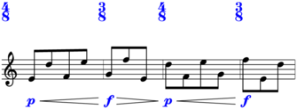>>> lilypond_file = maker.run(environment='docs') >>> abjad.show(lilypond_file, strict=89)
With bookend:
>>> maker = baca.SegmentMaker( ... score_template=baca.SingleStaffScoreTemplate(), ... spacing=baca.minimum_duration((1, 12)), ... time_signatures=[(4, 8), (3, 8), (4, 8), (3, 8)], ... )
>>> maker( ... 'MusicVoice', ... baca.enchained_hairpin( ... *baca.make_dynamics('p f'), ... bookend=True, ... selector=baca.leaves().enchain([8]), ... ), ... baca.make_even_runs(), ... baca.pitches('E4 D5 F4 E5 G4 F5'), ... baca.text_spanner_staff_padding(4.5), ... )
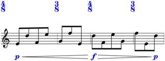>>> lilypond_file = maker.run(environment='docs') >>> abjad.show(lilypond_file, strict=89)
Return type: PiecewiseCommand
-
static
espressivo(*, selector='baca.phead(0)')¶ Attaches espressivo.
Attaches espressivo to pitched head 0:
>>> music_maker = baca.MusicMaker() >>> contribution = music_maker( ... 'Voice 1', ... [[0, 2, 10], [18, 16, 15, 20, 19], [9]], ... baca.espressivo(), ... baca.rests_around([2], [4]), ... baca.tuplet_bracket_staff_padding(5), ... counts=[1, 1, 5, -1], ... time_treatments=[-1], ... ) >>> lilypond_file = music_maker.show(contribution) >>> abjad.show(lilypond_file, strict=89)
Attaches espressivo to pitched heads in tuplet 1:
>>> music_maker = baca.MusicMaker() >>> contribution = music_maker( ... 'Voice 1', ... [[0, 2, 10], [18, 16, 15, 20, 19], [9]], ... baca.map( ... baca.espressivo(selector=baca.pheads()), ... baca.tuplet(1), ... ), ... baca.rests_around([2], [4]), ... baca.tuplet_bracket_staff_padding(5), ... counts=[1, 1, 5, -1], ... time_treatments=[-1], ... ) >>> lilypond_file = music_maker.show(contribution) >>> abjad.show(lilypond_file, strict=89)
Return type: IndicatorCommand
-
static
fermata(*, selector='baca.leaf(0)')¶ Attaches fermata.
Attaches fermata to first leaf:
>>> music_maker = baca.MusicMaker() >>> contribution = music_maker( ... 'Voice 1', ... [[0, 2, 10], [18, 16, 15, 20, 19], [9]], ... baca.fermata(), ... baca.rests_around([2], [4]), ... baca.tuplet_bracket_staff_padding(5), ... counts=[1, 1, 5, -1], ... time_treatments=[-1], ... ) >>> lilypond_file = music_maker.show(contribution) >>> abjad.show(lilypond_file, strict=89)
Attaches fermata to first leaf in tuplet 1:
>>> music_maker = baca.MusicMaker() >>> contribution = music_maker( ... 'Voice 1', ... [[0, 2, 10], [18, 16, 15, 20, 19], [9]], ... baca.fermata(selector=baca.tuplets()[1:2].phead(0)), ... baca.rests_around([2], [4]), ... baca.tuplet_bracket_staff_padding(5), ... counts=[1, 1, 5, -1], ... time_treatments=[-1], ... ) >>> lilypond_file = music_maker.show(contribution) >>> abjad.show(lilypond_file, strict=89)
Return type: IndicatorCommand
-
static
finger_pressure_transition(*, selector='baca.tleaves()', right_broken=None)¶ Makes finger pressure transition glissando.
>>> maker = baca.SegmentMaker( ... score_template=baca.SingleStaffScoreTemplate(), ... spacing=baca.minimum_duration((1, 12)), ... time_signatures=[(4, 8), (3, 8), (4, 8), (3, 8)], ... )
>>> maker( ... 'MusicVoice', ... baca.finger_pressure_transition(selector=baca.notes()[:2]), ... baca.finger_pressure_transition(selector=baca.notes()[2:]), ... baca.make_notes(), ... baca.note_head_style_harmonic(selector=baca.note(0)), ... baca.note_head_style_harmonic(selector=baca.note(2)), ... baca.pitch('C5'), ... )
>>> lilypond_file = maker.run(environment='docs') >>> abjad.show(lilypond_file, strict=89)
Return type: SuiteCommand
-
static
flag_stencil_false(*, selector='baca.leaf(0)')¶ Overrides flag stencil.
Return type: OverrideCommand
-
static
flag_transparent(*, selector='baca.leaves()')¶ Overrides flag transparency.
-
static
flageolet(*, selector='baca.phead(0)')¶ Attaches flageolet.
Attaches flageolet to pitched head 0:
>>> music_maker = baca.MusicMaker() >>> contribution = music_maker( ... 'Voice 1', ... [[0, 2, 10], [18, 16, 15, 20, 19], [9]], ... baca.flageolet(), ... baca.rests_around([2], [4]), ... baca.tuplet_bracket_staff_padding(5), ... counts=[1, 1, 5, -1], ... time_treatments=[-1], ... ) >>> lilypond_file = music_maker.show(contribution) >>> abjad.show(lilypond_file, strict=89)
Attaches flageolet to pitched heads in tuplet 1:
>>> music_maker = baca.MusicMaker() >>> contribution = music_maker( ... 'Voice 1', ... [[0, 2, 10], [18, 16, 15, 20, 19], [9]], ... baca.map( ... baca.flageolet(selector=baca.pheads()), ... baca.tuplet(1), ... ), ... baca.rests_around([2], [4]), ... baca.tuplet_bracket_staff_padding(5), ... counts=[1, 1, 5, -1], ... time_treatments=[-1], ... ) >>> lilypond_file = music_maker.show(contribution) >>> abjad.show(lilypond_file, strict=89)
Return type: IndicatorCommand
-
static
flags()¶ Flags music.
Flags music:
>>> music_maker = baca.MusicMaker() >>> contribution = music_maker( ... 'Voice 1', ... [[0, 2, 10], [18, 16, 15, 20, 19], [9]], ... baca.flags(), ... baca.rests_around([2], [4]), ... baca.tuplet_bracket_staff_padding(5), ... counts=[1, 1, 5, -1], ... time_treatments=[-1], ... ) >>> lilypond_file = music_maker.show(contribution) >>> abjad.show(lilypond_file, strict=89)
Return type: BeamSpecifier
-
static
force_accidental(*, selector='baca.pleaf(0)')¶ Forces accidental.
Inverts edition-specific tags:
>>> maker = baca.SegmentMaker( ... score_template=baca.SingleStaffScoreTemplate(), ... time_signatures=[(4, 8), (3, 8), (4, 8), (3, 8)], ... )
>>> maker( ... 'MusicVoice', ... baca.not_parts(baca.force_accidental(selector=baca.pleaves()[:2])), ... baca.make_notes(repeat_ties=True), ... baca.pitches('E4 F4'), ... )
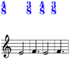>>> lilypond_file = maker.run(environment='docs') >>> abjad.show(lilypond_file, strict=89)
Return type: AccidentalAdjustmentCommand
-
static
fuse_compound_quarter_divisions(counts)¶ Fuses compound quarter divisions.
>>> expression = baca.fuse_compound_quarter_divisions([1])
>>> for item in expression([(2, 8), (2, 8), (2, 8)]): ... item ... Division((1, 4)) Division((1, 4)) Division((1, 4))
>>> for item in expression([(3, 8), (3, 8), (3, 8)]): ... item ... Division((1, 4)) Division((1, 8)) Division((1, 4)) Division((1, 8)) Division((1, 4)) Division((1, 8))
>>> expression = baca.fuse_compound_quarter_divisions([2])
>>> for item in expression([(2, 8), (2, 8), (2, 8)]): ... item ... Division((2, 4)) Division((1, 4))
>>> for item in expression([(3, 8), (3, 8), (3, 8)]): ... item ... Division((3, 8)) Division((3, 8)) Division((3, 8))
Return type: DivisionSequenceExpression
-